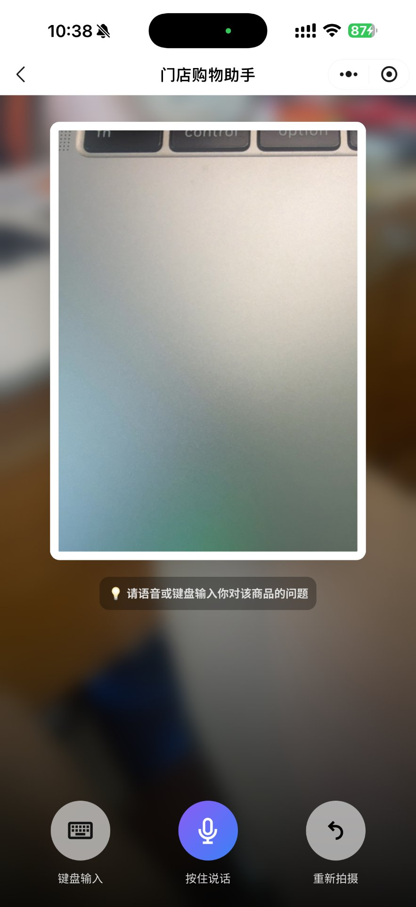
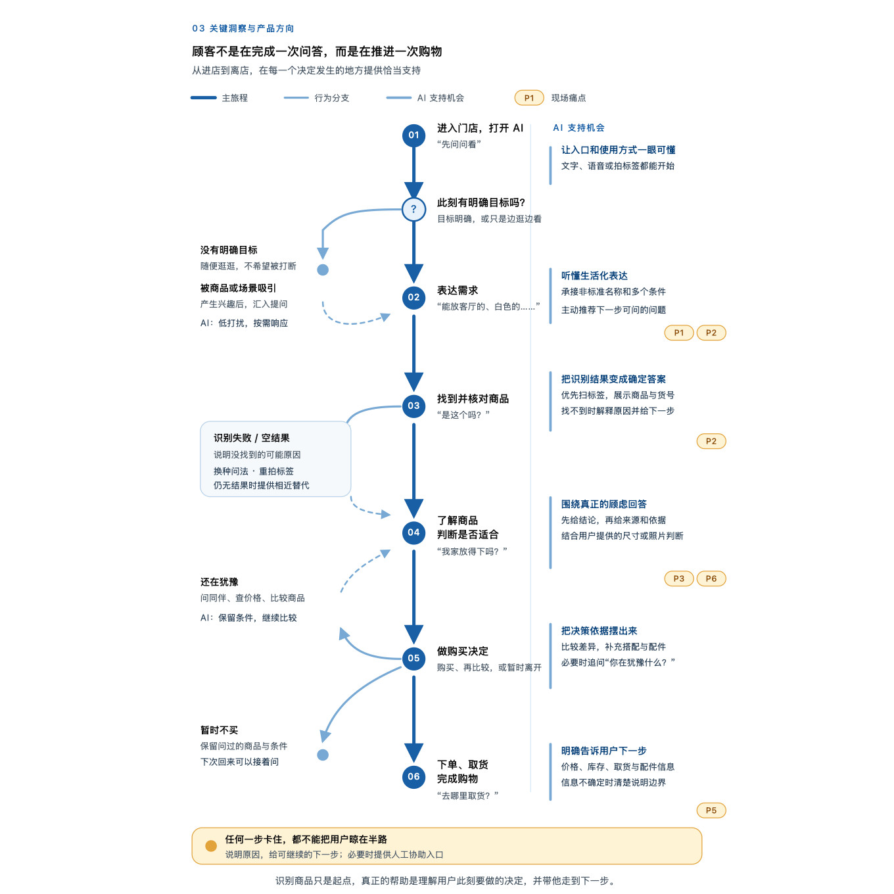
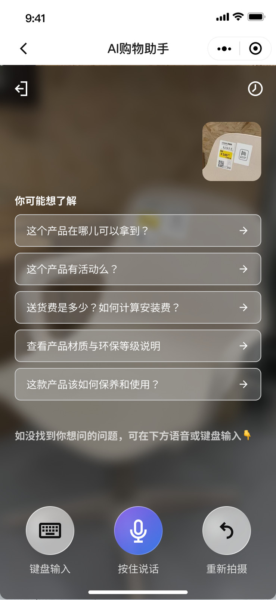
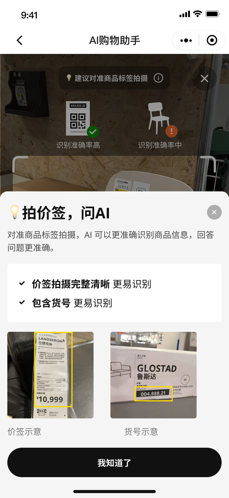
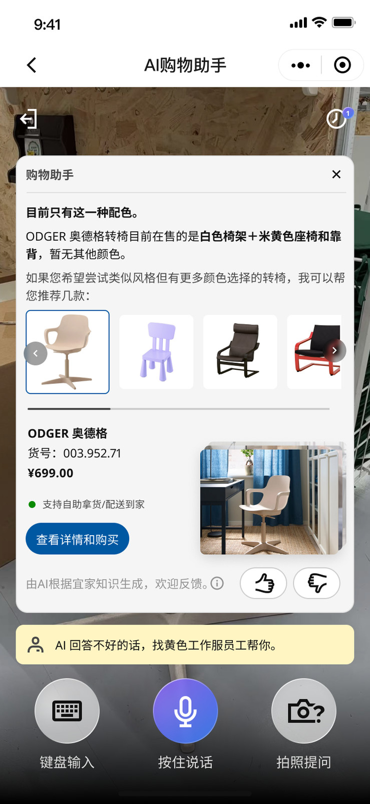

CASE 01 / 27
生活语言无法直接映射
“浴室好物”描述的是生活场景，不是系统里的标准商品分类。用户已经表达了需求，系统却仍在等待关键词。
点击图片可查看原始研究证据。In-store Research · AI UX · Service Handoff
用户站在商品旁边时，不会先想好一个标准问题。他们会拍下眼前的东西，再问“这是什么、怎么用、适不适合我”。
01 · FIELD STUDY
现有研究报告记录了 4 组参与者的真实逛店过程。我参与现场观察、素材整理、case 编码和后续交互探索。
RESEARCH REPORT 打开完整调研报告 ↗02 · WHAT HAPPENED
“浴室好物”“这个是干什么的”都不是标准品类名。下面从 27 个现场 case 中选取 3 个代表性片段；完整记录可在调研报告中查看。
“浴室好物”描述的是生活场景，不是系统里的标准商品分类。用户已经表达了需求，系统却仍在等待关键词。
点击图片可查看原始研究证据。
拍摄前的预设入口没有进入用户视线；拍摄后系统也没有根据识别结果提供下一步问题，用户仍要自己想“接下来该问什么”。
点击任一图片可查看原始研究证据。用户一边记录尺寸，一边比较位置和使用情境。识别商品之后，真正的问题是它是否适合自己的家。
点击图片可查看原始研究证据。这是什么？怎么用？在哪里拿到？
问题会从识别商品继续延伸到用途、适配和取货，单次回答并不是任务终点。
03 · SYNTHESIS
我把现场观察整理成一条门店旅程：从发现、理解和判断，到购买与取货，每个节点都可能需要 AI 支持或人工协助。

04 · DESIGN SHIFT
05 · DESIGN RESPONSE
我没有把所有帮助同时堆进主界面，而是按照用户当下最需要完成的动作，逐步提供下一步。

移除相机页里竞争注意力的预设问题，把建议建立在已识别商品之上。

主流程保持轻量，Info 弹窗再说明识别依据和正确拍摄方式。

不把 AI 包装成万能入口；回答不满意或超出能力范围时，明确引导至黄色制服员工。